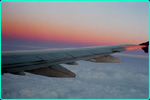

Jeg sidder i et fly i 10 kilometers højde. Vi flyver med en hastighed af knap 1000 km i timen svarende til 16 km i minuttet eller ca. 266 meter i sekundet. Alt virker stille og roligt-vingen bevæger sig ikke. Horisonten, der er farvet af den nedgående sol, står smukt i rosa farver. Under det rosa er Himlen dybblå. Det er som om tiden er gået i stå, og at vi hænger heroppe mellem Himmel og Jord i et tidløst, evigt øjeblik. Mærkeligt-at det kan føles så trygt at sidde i en lille trykkabine i rasende fart et sted mellem Jord og Himmel. Man kunne næsten fristes til at søge yderligere opad for at holde fast i strålerne fra den nedgående sol, som oplyser underkanten af vingen. Tænker jeg på vores fart svimler det for mig, men den opleves ikke- alt er stille- kun den svage lyd fra motorerne sanses som en beroligende summen. Min tryghed at betinget af, at jeg har tillid til at flyet vil lande sikkert i lufthavnen i Tirstrup- hvis vi når så langt. Min tryghed i nuet er altså betinget af, at jeg har tillid til fremtiden. Hvis jeg prøver at tænke den tanke til ende, at vi evt. havarerer ved landingen forsvinder min ro prompte og det tidsløse øjeblik bliver forvandlet til et tidsløst helvede af rædsel- al min ro kunne være blæst bort på et splitsekund. Vi bevæger os som mennesker på en linie mellem fødsel og død- mellem skabelse og tilintegørelse. Mellem disse to begivenheder må vi søge at leve beroliget og være fuldt til stede i det flygtige øjeblik, der passerer os med lysets hastighed. Hver dag er en sådan farefuld rejse fra morgen til aften, hvor vi aldrig ved, hvor vi lander inden solen går ned. Ja i hvert et øjeblik er der skabelse og tilintegørelse. Normalt siger man, at det er på fortiden vi i nutiden bygger fremtiden, men her gælder det, at det er i forventningen om fremtiden, at vi bygger nuet og dermed skaber en bro til fortiden. Kristeligt set må vi gøre den samme bevægelse i tankerne, som vi gør under en flyvning. I tillid til at Gud er kærlighed, kan vi leve i tryghed i nuet- uanset hvad der sker. Det evige liv starter allerede her og nu på grænsen mellem rosa og violet. Der er ingen død mere. ”Jeg er gået over fra døden til livet.” Jeg fæstner blikket på den uendelige horisont mellem det rosa og violette, som står urokkeligt fast- intet bevæger sig- jeg har evigheden for mine øjne, og jeg falder fuldstændig til ro i et evigt, saligt øjeblik. Flyet synker langsomt ned i mørket og vingen opløses og forsvinder helt i de natmørke skyer. Båret af håbets hånd glider vi ned til en sikker landing. | |
|  | ||
| ||